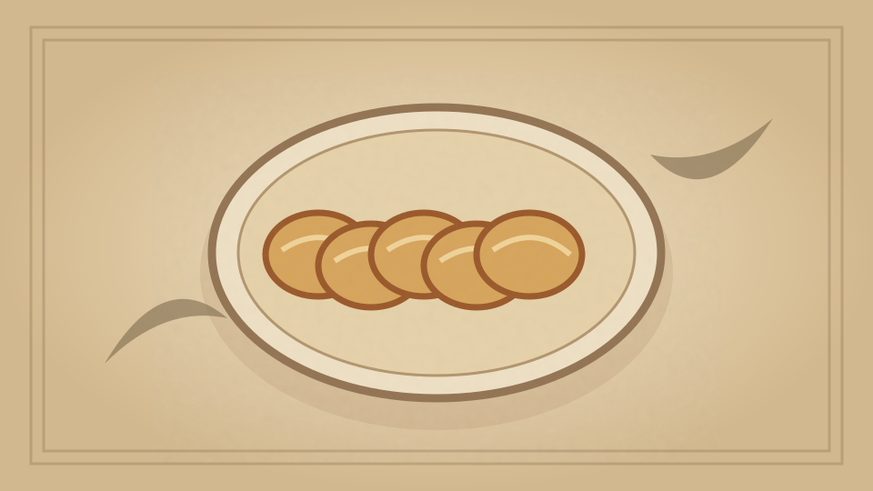

1910 · Fannie Merritt Farmer · BREAD AND BREAD MAKING
Bread Making
The Boston Cooking-School Cook Book

Historical Recipe
The following text is extracted from the 1910 edition, retaining historical terminology and quantities.
Original Ingredients & Directions
Fermented bread is made by mixing to a dough, flour, with a definite quantity of water, milk, or water and milk, salt, and a ferment. Sugar is usually added to hasten fermentation. Dough is then kneaded that the ingredients may be thoroughly incorporated, covered, and allowed to rise in a temperature of 68° F., until dough has doubled its bulk. This change has been caused by action of the ferment, which attacks some of the starch in flour, and changes it to sugar, and sugar in turn to alcohol and carbon dioxide, thus lightening the whole mass. Dough is then kneaded a second time to break bubbles and distribute evenly the carbon dioxide. It is shaped in loaves, put in greased bread pans (they being half filled), covered, allowed to rise in temperature same as for first rising, to double its bulk. If risen too long, it will be full of large holes; if not risen long enough, it will be heavy and soggy. If pans containing loaves are put in too hot a place while rising, a heavy streak will be found near bottom of loaf.
How to Shape Loaves and Biscuits. To shape bread dough in loaves, divide dough in parts, each part large enough for a loaf, knead until smooth, and if possible avoid seams in under part of loaf. If baked in brick pan, place two loaves in one pan, brushed between with a little melted butter. If baked in long shallow pan, when well kneaded, roll with both hands to lengthen, care being taken that it is smooth and of uniform thickness. Where long loaves are baked on sheets, shape and roll loosely in a towel sprinkled with corn meal for last rising.
51 To shape bread dough in biscuits, pull or cut off as many small pieces (having them of uniform size) as there are to be biscuits. Flour palms of hands slightly; take up each piece and shape separately, lifting, with thumb and first two fingers of right hand, and placing in palm of left hand, constantly moving dough round and round, while folding towards the centre; when smooth, turn it over and roll between palms of hands. Place in greased pans near together, brushed between with a little melted butter, which will cause biscuits to separate easily after baking. For finger rolls, shape biscuits and roll with one hand on part of board where there is no flour, until of desired length, care being taken to make smooth, of uniform size, and round at ends.
Biscuits may be shaped in a great variety of ways, but they should always be small. Large biscuits, though equally good, never tempt one by their daintiness.
Bread is often brushed over with milk before baking, to make a darker crust.
Where bread is allowed to rise over night, a small piece of yeast cake must be used; one-fourth yeast cake to one pint liquid is sufficient, one-third yeast cake to one quart liquid. Bread mixed and baked during the day requires a larger quantity of yeast; one yeast cake, or sometimes even more, to one pint of liquid. Bread dough mixed with a large quantity of yeast should be watched during rising, and cut down as soon as mixture doubles its bulk. If proper care is taken, the bread will be found most satisfactory, having neither “yeasty” nor sour taste.
Fermented bread was formerly raised by means of leaven.
Automatically extracted transcription; editorial verification pending. Historical instructions may not meet modern food-safety standards.